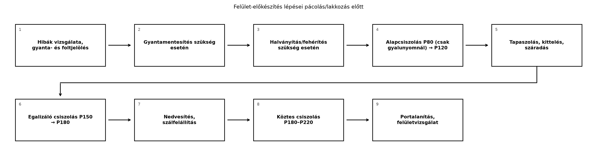

Egy megrendelő tölgyfa asztallapot kér pácolva és lakkozva, de az alkatrészen sötét foltok, egy göcsrepedés és halvány gyaluélnyomok látszanak. Egy másik munka lucfenyő ablakpárkány: a felülete gyantás, a gyanta ragad, és a lakk nem tapadna meg egyenletesen. Ha ilyenkor azonnal pácot vagy lakkot viszünk fel, a hiba átüt, a bevonat foltos vagy lepattogzó lesz. A felületkezelés minősége tehát nem a lakknál kezdődik, hanem a felület előkészítésénél: foltokat halványítunk, gyantát eltávolítunk, repedéseket betapaszolunk, a szálat felállítjuk, és a felületet fokozatosan finomítjuk. Ebben az alfejezetben ezeket a műveleteket tanuljuk meg.
Képzeld el a fa felületét nagyító alatt: gyalulás után a rostok megnyílnak, a pórusok mélyülnek, a gyanta a gyantajáratokban ül, a göcs körül repedés tátong. A felületkezelő anyag csak akkor tud egyenletes, jól tapadó réteget képezni, ha a felület tiszta, sík, a pórusok nyitottak vagy megfelelően tömítettek, és nincs por, zsír, gyanta vagy lazán kötődő szál.
A felület-előkészítés tipikus műveleti sorát az alábbi folyamatábra mutatja egy pácolandó, lakkozandó tömörfa alkatrészen. A sorrend azért fontos, mert a vegyi műveletek (gyantamentesítés, halványítás) után keletkező felületi egyenetlenséget csak ezután szabad tapaszolni és csiszolni; a csiszolási sor: P80 (csak ha gyalunyom van) → P120 → tapaszolás → P150 → P180 → nedvesítés → köztes csiszolás P180–P220 → portalanítás (tájékoztató, ellenőrizendő: pác- és lakkgyártó ajánlása). A nedvesítés közvetlenül a finom csiszolás után, a köztes csiszolás előtt következik, hogy a felállított szálat el lehessen távolítani.

A fa oldalán a rostok irányát mindig jelöljük, mert a csiszolást rostirányban végezzük. A felületvizsgálatnál a rajz–anyag–művelet hármas elvét követjük: a rajzról tudjuk, melyik felület lesz látható, az anyagból tudjuk, hogy gyantás vagy pórusos, a műveletből pedig, hogy pácolás vagy fedőlakkozás következik.
Definíció. A felület-előkészítés mindazoknak a műveleteknek az összessége, amelyek a nyers, gyalult vagy csiszolt fa felületét alkalmassá teszik a tervezett felületkezelő anyag egyenletes felhordására, tapadására és megjelenésére. Ebbe tartozik a felület tisztítása, a hibák kijavítása, a színkiegyenlítés, a szálfelállítás és a fokozatos csiszolás.
Szabály. A felület-előkészítés anyagait mindig a felületkezelő rendszerhez választjuk. Más az igény egy natúr olajos, pácolott-lakkozott vagy fedőmázas felületnél. Az anyagok gyártói műszaki adatlapja és biztonsági adatlapja (SDS) a mérvadó; a könyvben szereplő keverési arányok és mennyiségek tanulási példák.
A felület-előkészítés anyagai:
Gépbiztonság és egészségvédelem. Minden vegyi anyagot (oldószer, lúg, hidrogén-peroxid, tapasz, pác) csak a biztonsági adatlap ismerete után szabad használni. A fa csiszolása közben por keletkezik; a keményfa-por (például tölgy, bükk, kőris) rákkeltő hatású lehet, ezért elszívással és légzésvédővel dolgozz. Az oldószergőz és a lúgmarás ellen szellőzés, latex/nitril védőkesztyű, védőszemüveg, hosszú ujjú munkaruha szükséges. A halványító oldatot ne keverd ismeretlen anyagokkal, mert hő, gáz vagy fröccsenés keletkezhet. A felület-előkészítési munkáknál a gépi csiszológép csak betanított, felügyelt tanuló által kezelhető, a védőburkolat és az elszívó rács nélkül soha.
Tilos. Oldószert, lúgot, halványító maradékot a lefolyóba önteni. Az olajos, oldószeres rongyot nem szabad összegyűrve tárolni, mert öngyulladhat; fém, fedeles, tűzálló konténerbe kell tenni. A csiszolóporral teli zsákot nyílt láng közelében üríteni tilos, mert a finom fa-légkeverék porrobbanást okozhat.
Szabály. A felület-előkészítés előtt vizsgáld meg a felületet: milyen fafaj, milyen hibák (gyanta, folt, repedés, göcs, kitört él, gyalu- vagy csiszolási nyom), milyen a szálirány, mennyire poros, zsíros, és mi lesz a következő művelet (pácolás, lakkozás, olajozás). A sorrendet a kémiai folyamatok és a csiszolási finomság határozza meg: előbb a vegyi kezelések, utána a mechanikai javítások, végül a finom csiszolás.
Definíció. A gyantamentesítés a fenyőfélék (luc, erdei, vörösfenyő, Douglas-fenyő) felületén megjelenő gyanta eltávolítása vagy semlegesítése, hogy a későbbi pácolás és lakkozás ne foltosodjon, és a bevonat meg tudjon tapadni.
Eljárás oldószerrel. A gyantás foltot jelöld meg krétával. Tiszta pamutrongyot vagy vattát nedvesíts be nitrohígítóval vagy acetonnal, és a gyantás felületet alaposan dörzsöld át. A gyanta feloldódik, vagy a rongy felszedi. A műveletet ismételd, amíg a rongy tiszta, illetve a felület nem ragad. Szárítás után ellenőrizd tapintással: a felület hűvös, de nem ragacsos. Az oldószert mindig jól szellőző helyen, nyílt lángtól távol használd.
Eljárás lúgos szerrel. A gyantás foltra híg lúgoldatot kenünk fel, amely a gyantát elszappanosítja. Rövid hatásidő után tiszta, nedves ronggyal letöröljük, majd a felületet semleges folyadékkal (például hígított ecettel) áttöröljük, és tiszta vízzel leöblítjük. Figyelem. A lúg a fa színét sötétítheti, ezért először próbadarabon ellenőrizd. A töménység és a hatásidő a gyártói adatlaptól függ; a könyvben ne kísérletezz ismeretlen aránnyal. (ellenőrizendő: a termék adatlapja) A lúgos kezelés után mindig teljesen meg kell szárítani a fát, és ellenőrizni kell a felület pH-ját, mert a maradék lúg a lakkot, pácot tönkreteheti.
Tipp. A gyantás fenyőt már a gyalulás előtt érdemes ellenőrizni, mert a gyanta a késszárnyat is szennyezheti. A gyantás fűrészáru tárolásánál a hő hatására a gyanta megfolyik; ezért ne tárold tűző napon.
Definíció. A halványítás vagy fehérítés a faanyag természetes színének világosítása, sötét foltok, elszíneződések (például vizesedésnyom, vas-folt, penészfolt) eltüntetése vagy az egész felület színének kiegyenlítése. A halványítás oxidáló vagy redukáló kémiai reakcióval bontja le a színt adó anyagokat.
Recept: hidrogén-peroxidos halványítás tájékoztató lépései.
Megjegyzés. A halványítás nem pótolja a gyalulást, és nem varázsol el minden foltot. A kékes csersavfolt vasreakció esetén más kezelést, például oxálsavas oldatot használnak; ezt csak megfelelő ismerettel és biztonsági adatlap alapján végezd, mert mérgező. (ellenőrizendő: a kezelőanyag és a munkavédelmi előírások) A halványítás után a fa néha túl világos, egyenetlen, ezért utólagos pácolással színezhetjük vissza.
Definíció. A tapaszolás kisebb hibák (göcsrepedés, szeglyuk, hajszálrepedés, kisebb kitörés) kitöltése tapasszal, hogy a felület sík és egységes legyen. A pórustömítés a nyitott pórusú fafajok (tölgy, kőris, dió, mahagóni) pórusainak kitöltése, hogy a lakk ne „süppedjen” bele, és a pácolás egyenletes legyen. A kittelés nagyobb, mélyebb hibák pótlása kétkomponensű kittel, amely száradás után kemény, jól csiszolható.
Eljárás lépésenként:
Pórustömítés. Pácolandó nyitott pórusú fánál (tölgy, kőris) a pórustömítőt a pác száradása után, a lakkozás előtt hordjuk fel, vagy a pác színével egyező, színezett pórustömítőt használunk; pác nélküli lakkozásnál az alapozás előtt jön. A pórustömítőt a gyártói hígítás után hordd fel; a felesleget gumilappal vagy spatulával húzd le a felületről; a felület száradása után finoman csiszold vissza, hogy a tömítőanyag csak a pórusokban maradjon. Megjegyzés. Nem minden fafaj igényel pórustömítést; a zárt pórusú bükk, juhar, cseresznye, gyertyán esetén gyakran felesleges.
Definíció. A nedvesítés a csiszolt fa felületének vízzel való megnedvesítése, hogy a fa felszínén fekvő, levágott rostdarabkák megduzzadjanak és felálljanak. A köztes csiszolás a nedvesítés után felállt, kiálló szálak eltávolítása, hogy a pácolás vagy lakkfelhordás után ne váljék érdes felületűvé a fa.
Eljárás. A P150–P180 csiszolás után enyhén nedvesítsd be a felületet tiszta vízzel; ne áztasd el, csak nedvesítsd. Hagyd megszáradni. A felállt szálat finom csiszolóvászonnal (P180–P220) rostirányban, kézzel vagy excentercsiszolóval távolítsd el. A felületet portalanítsd, és ha szükséges, ismételd meg a nedvesítés–csiszolás ciklust. Különösen fontos ez pácolás előtt, mert a pác a felállt szálakat jobban kiemelné, és a száraz csiszolás után ismét érdes lehet.
Miért így? A fa a nedvesség hatására mindig dagad, a rostok megduzzadnak. Ha az első nedvesítés után eltávolítjuk a felállt szálat, a későbbi pácolás vagy lakk nedvessége nem fog újabb, nagyobb mértékű szálfelállást okozni. Ez a „a fa mozog” elv alkalmazása a felület-előkészítésben.
Definíció. Az egalizáló csiszolás a felület egyenletes, azonos finomságúra csiszolása a teljes látható felületen, hogy a tapasz, a pórustömítő és a halványítás utáni egyenetlenségek kiegyenlítődjenek. A portalanítás a felületről és a pórusokból a finom csiszolópor eltávolítása, hogy az ne keveredjék a páccal, lakkal, és ne okozzon érdes bevonatot.
Eljárás. A csiszolás finomsága a felületkezelő rendszertől függ: natúr olajos, viaszos felületnél P150–P180 is elég; pácolt-lakkozott felületnél P180 (köztes csiszolásnál P220), mázolt felületnél P150–P180 (ellenőrizendő: pác- és lakkgyártó ajánlása). A csiszolást rostirányban végezd; a sarkokat, éleket enyhén törd le, hogy a lakkfilm ne folyjon le, és ne képződjön éles él. A gép mozgatása legyen folyamatos; ne maradj egy helyen, mert mélyedést csiszolsz. A sarokba, profilba kézi csiszolótömböt használj.
Portalanítás. Porszívóval, puha kefével, enyhén nedves, szöszmentes ronggyal távolítsd el a port. A felület tiszta, tapintásra pormentes legyen. A levegőből leülepedő port a pác/lakk előtt utoljára töröld le.
Felületvizsgálat. Ellenőrizd a felületet fényben, szemrevételezéssel és tapintással: legyen egyenletes színű, sík, pormentes, gyantamentes, a tapaszok ne üssenek el túl erősen, a szál ne álljon fel. Ha eltérést tapasztalsz, javítsd, mielőtt továbbmennél.
A felület-előkészítésnél is szükség van kis számításokra, például a tapasz mennyiségének becslésére és a halványító oldat hígítására.
Példa 1. Tapaszmennyiség göcsrepedésbe. Egy tölgy asztallap göcsénél a repedés hossza , szélessége , mélysége . Milyen térfogatú tapaszt kell benyomni? Adjunk rá 20 % ráhagyást a zsugorodásra és a tömörítésre.
Számítás. A repedés térfogata:
Átváltva: . Ráhagyással:
Tehát kb. tapasz szükséges. Ellenőrzés: egy 0,7 cm³-es adag kb. egy mogyorószemnyi; nagyságrendileg elfogadható, mert a repedés is kicsi. A gyakorlatban inkább kis tubusból, gombócnyi adagot vegyél, mert a veszteség és a csiszolás miatt több fogy.
Példa 2. Halványító oldat hígítása. Van 30 %-os hidrogén-peroxid-oldatunk, és 10 %-os oldatot szeretnénk készíteni belőle. Hány gramm víz kell 100 g 30 %-os oldathoz?
Számítás. A hígítási képlet: , ahol a tömegszázalék, az oldat tömege. A 30 %-os oldatban a hatóanyag tömege:
A 10 %-os oldat össztömege legyen . Ekkor:
A hozzáadandó víz:
Tehát 100 g 30 %-os oldathoz 200 g vizet kell adni, hogy 10 %-os oldatot kapjunk. Ellenőrzés: az össztömeg 300 g, a hatóanyag 30 g, ez éppen 10 %. A keverést mindig a vízhez öntve, óvatosan, kevergetve végezzük, nem fordítva. A tömény oldattal tanuló csak felügyelet mellett dolgozhat (zárt védőszemüveg vagy arcvédő, vegyszerálló kesztyű, műanyag edény); a rongyot és a maradékot ne tedd szerves hulladékkal egy edénybe.
A pontos felhasználható koncentrációt és hőmérsékletet a termék adatlapja határozza meg; ez a példa csak a hígítási logikát mutatja. (ellenőrizendő: a tényleges keverési arány a gyártói adatlapon)
Szabvány. A felületkezelő anyagok, ragasztók, tapaszok, halványítószerek kémiai biztonsága a CLP-rendelet és a REACH-rendelet hatálya alá tartozik; a termékeken H-mondatok és piktogramok jelzik a veszélyeket. (ellenőrizendő: a rendeletek pontos száma) A faipari gépek és a csiszológépek biztonsági követelményeire az MSZ EN ISO 19085 sorozat vonatkozik; a gépkönyv és a termék adatlapja mindig mérvadó. (ellenőrizendő: a szabvány és a géposztályok aktuális jelölése) A keményfa-por munkahelyi expozíciós határértéke jogszabályban rögzített, a csiszolásnál elszívást és légzésvédőt kell alkalmazni. (ellenőrizendő: a hatályos határérték és védőeszköz-besorolás)
Technológiai lap. Gyantás lucfenyő ablakpárkány felület-előkészítése pácolás és lakkos felületkezelés előtt.
Cél: a felület legyen gyantamentes, tiszta, száraz, a gyalu- és csiszolási nyomok P180 szemcsenagyságúra finomítva, a felállt szál eltávolítva.
Anyag: lucfenyő ablakpárkány , , , gyalult, gyantás foltokkal. (mintaadat)
Anyagok és szerszámok: gyantamentesítő oldószer (nitrohígító), tiszta pamutrongy, tapasz, tapasztókés, csiszolóvászon P80 → P120 → P150 → P180 (köztes P220), excentercsiszoló (vagy kézi csiszolótömb), nedves rongy, porszívó, derékszögelő, vonalzó, védőkesztyű, védőszemüveg, légzésvédő (FFP2/FFP3 – jelölés ellenőrizendő).
Beállítási adatok: excentercsiszoló fordulatszám a gépkönyv szerint; csiszolókorong tépőzáras, P80–P220; a gép porgyűjtőjét vagy elszívását csatlakoztasd. (ellenőrizendő: a gépkönyv és a csiszolóanyag adatlapja)
Gépbiztonság. A művelet betanított, felügyelt tanulónak szól; védőberendezés nélkül, egyedül, fáradtan ne végezd. Az excentercsiszolót csak a gépkönyv szerint, a gyártó által előírt koronggal szabad használni. A csiszológép burkolatát, elszívását tilos eltávolítani. A gépet indítás előtt ellenőrizd: a korong ép, jól rögzített, a gép nem rezeg, a csatlakozó és a kábel ép. Forgó csiszolótalpnál kesztyűt ne viselj (behúzás veszélye). A szálkás munkadarab mozgatásához a gép álló állapotában használhatsz munkakesztyűt. A gépet fogva, stabilan mozgasd.
Lépések:
Dokumentálás: rögzítsd a faanyagot, a használt anyagokat, a csiszolási sort, a nedvesítés idejét, a felületvizsgálat eredményét a műhelynaplóban.
A felület-előkészítés után ellenőrizd:
Ha eltérést találsz, a hibát azonosítsd, és a megfelelő lépést ismételd (például újragyantamentesítés, újracsiszolás, nedvesítés–csiszolás). A felületkezelés előtt a felület ne legyen vizes, zsíros, poros.
Hiba 1: a lakk alatt gyantafolt üt át. Tünet: a lakkozás után sárga, ragacsos foltok jelennek meg, a lakk nem tapad. Oka: nem gyantamentesítettük a fenyőt, vagy a gyanta a szárítás után újra kifolyt. Javítás: a lakkréteg eltávolítása után oldószeres gyantamentesítés, majd újra felület-előkészítés. Megelőzés: mindig vizsgáld meg a fenyő gyantatartalmát, és próbadarabon ellenőrizd a kezelést.
Hiba 2: a tapasz kilazul vagy elüt a színe. Tünet: száradás után a tapasz kiesik, repedezik, vagy sötétebb folt marad. Oka: nem tisztítottuk ki a repedést, nem nyomtuk be eléggé, vagy rossz színű tapaszt választottunk; a tapasz nem a pácolt végső színhez illik. Javítás: a kilazult tapaszt kaparjuk ki, tisztítsuk meg, és új tapasszal töltsük ki; a színt próbadarabon pácolva ellenőrizzük. Megelőzés: a tapasz színét mindig a tervezett pác után ellenőrizd, és a felületet alaposan portalanítsd.
Hiba 3: a felület az első pác után érdes. Tünet: a pác felhordása után a felület érdes, bár csiszoltunk. Oka: a fa szálfelállása a nedvességtől; nem nedvesítettünk és nem csiszoltunk közben. Javítás: a pác után óvatosan, finoman csiszold vissza a felállt szálat, majd portalaníts; de a gyakori megoldás a pácolás előtti nedvesítés–csiszolás. Megelőzés: a csiszolási sort mindig nedvesítéssel és köztes csiszolással zárd, ha pácolás vagy lazúrozás következik.
Hiba 4: a felület poros, a lakk érdes, halvány. Tünet: a lakk száradása után apró szemcsék, por, homályos felület. Oka: a portalanítás elmaradt, vagy a lakkozás előtt a levegőből por ült a felületre. Javítás: a lakkréteg finom csiszolása és újra lakkozás. Megelőzés: portalaníts porszívóval és enyhén nedves ronggyal; a lakkozás előtt ne porszívózz a felület közelében.
Egy asztalos megrendelést kapott: egy tölgyfa étkezőasztal lapját kellett természetes páccal és PU-lakkal felületkezelni. A felület enyhén gyalult, néhány sötét vízfolttal és egy göcsrepedéssel. A tanuló először a csiszolással kezdte, majd rögtön pácot vitt fel. Az eredmény: a vízfoltok helyén a pác sötétebb maradt, a göcsrepedés megtelt páccal és fekete lett, a felület pedig érdes, mert a szál felállt. A reklamáció során a mester újra csiszolta a lapot, a foltot halványító szerrel kezelte, a repedést betapasztotta, nedvesítéssel szálfelállítást végzett, majd újra pácolt. A végeredmény egyenletes, selymes lett. A tanulság: a felület-előkészítés lépései nem foszthatók meg egymástól, és a sorrend kötelező.
1. feladat (A) Sorold fel a felület-előkészítés fő lépéseit egy gyantás lucfenyő pácolás előtt, a sorrenddel együtt.
2. feladat (A) Egy göcsrepedés méretei: , , . Mennyi tapasz kell 25 % ráhagyással? Add meg a térfogatot cm³-ben.
3. feladat (B) Van 20 %-os hidrogén-peroxid-oldat. Mennyi vizet kell adni 150 g oldathoz, hogy 8 %-os oldatot kapjunk? (Tömegszázalékkal számolj.)
4. feladat (B) Egy tölgy asztallap felülete pórusos. Melyik anyagot használod a pórusok kitöltésére, és milyen sorrendben végzed a pácolás előtt? Indokold meg.
5. feladat (C) A gyantamentesítéshez lúgos oldatot használtál. A felületen fehéres, sós kivirágzás maradt. Mi lehet az oka, és mit teszel?
6. feladat (D) Képzeld el, hogy egy 1,2 m²-es tölgy étkezőasztal lapot kell előkészíteni természetes pácolásra. Készítsd el a technológiai lap lépéseit, az ellenőrzési pontokkal, a szükséges anyagokkal és a biztonsági előírásokkal. A gépi csiszoló használatára térj ki.
1. feladat (A) A sorrend: 1. felületvizsgálat, 2. gyantamentesítés, 3. halványítás/fehérítés ha szükséges, 4. tapaszolás/kittelés (alapcsiszolás P120 után), 5. alapcsiszolás P80 (ha gyalunyom van) → P120, tapaszolás, majd egalizáló csiszolás P150 → P180, 6. nedvesítés, szálfelállítás, 7. köztes csiszolás P180–P220, 8. portalanítás és felületvizsgálat. A vegyi kezelések a mechanikai javítások előtt vannak; a nedvesítés a finom csiszolás előtt.
2. feladat (A) Adott: , , , ráhagyás 25 %. Keresett: .
Ráhagyással:
Tehát kb. 1,1 cm³ tapasz kell.
3. feladat (B) Adott: , , . Keresett: . A hatóanyag:
A céloldat tömege:
A hozzáadott víz:
Tehát 225 g vizet kell adni. Ellenőrzés: 30 g hatóanyag / 375 g = 8 %.
4. feladat (B) A pórusok kitöltésére pórustömítőt használok. A sorrend pácolt tölgynél: tiszta, gyantamentes, pormentes felület; pácolás; a pác száradása után pórustömítő (vagy a pác színével egyező, színezett pórustömítő) felhordása, felesleg lehúzása; száradás; visszacsiszolás P180–P220, hogy a tömítő csak a pórusokban maradjon; portalanítás; lakkozás. Ha a pórustömítőt pácolás előtt, színtelenül vinnénk fel, a pác nem jutna be a pórusokba, és a tölgy jellegzetes rajzolata eltűnne. A tölgy nyitott pórusú, ezért a pórustömítés fontos, különben a lakk egyenetlenül szívódik be (ellenőrizendő: a felületkezelő rendszer adatlapja).
5. feladat (C) A fehéres sós kivirágzás oka: a lúgos oldat nem távozott teljesen, és a felületen lúgsó maradt; esetleg a semlegesítés/öblítés elmaradt. Teendő: a felületet tiszta, nedves ronggyal alaposan lemosni, majd hígított ecetes vízzel semlegesíteni, tiszta vízzel leöblíteni, megszárítani; próbadarabon ellenőrizni. Maradék lúg esetén a lakk/pác hibás lesz.
6. feladat (D) Lásd a fenti Technológiai lap mintáját; a tölgy asztallapra: a csiszolás excentercsiszolóval, P80 → P120 → P180, a göcsrepedést tapaszold, a pórusokat tömítsd, nedvesítés és köztes csiszolás P180–P220, portalanítás. A gép használatánál: gépkönyv, védőburkolat, elszívás, légzésvédő; csiszológépen kesztyűt tilos viselni. A halványítást csak foltkezelésnél használd. A lépéseknél mindig ellenőrizd: a felület egyenletes, pormentes, a tapasz nem üt el.
A felület-előkészítés célja, hogy a fa felülete a pácolás, lakkozás vagy olajozás előtt tiszta, sík, gyantamentes, pormentes és a megfelelő finomságra csiszolt legyen. A fő műveletsor: felületvizsgálat; gyantamentesítés oldószerrel vagy lúggal; halványítás hidrogén-peroxiddal, ha szükséges; tapaszolás, kittelés, pórustömítés; csiszolás 80 → 120 → (tapaszolás) → 150 → 180 grádussal; nedvesítés szálfelállításhoz; köztes csiszolás a felállt szál eltávolítására; portalanítás és végső felületvizsgálat. A sorrend azért kötött, mert a vegyi kezelések előkészítik a felületet, a mechanikai javítások után pedig a nedvesítés–csiszolás akadályozza meg a szálfelállást. A tapaszt színben és keménységben a fafajhoz és a páchoz kell igazítani; próbadarabon mindig ellenőrizd. A vegyi anyagok és a por ellen a biztonsági adatlap, szellőzés, védőkesztyű, védőszemüveg, légzésvédő és az olajos rongyok tűzbiztos tárolása kötelező. Továbbvitt eredmény. Az így előkészített felület a Pácolás: pácok fajtái, előkészítés, felhordás, hibák alfejezetben használt alap: a pác egyenletesen szívódik be, a színfelvétel egyenletes, és a lakkréteg jól tapad. A csiszolási finomság és a portalanítás hiánya azonnal látható hibát okoz a kész bevonaton.
Forrástípusok: a Csiszolási technológiák felületkezelés alá és a méret-, minőség-ellenőrzés csiszolási technológia, a Faipari hulladékok, veszélyes anyagok és a biztonsági adatlap biztonsági adatlap-kezelés, felületkezelő anyagok gyártói műszaki adatlapjai és biztonsági adatlapjai, csiszológép gépkönyve, MSZ EN ISO 19085 faipari gépek biztonsága (ellenőrizendő), CLP-rendelet és REACH-rendelet (ellenőrizendő pontos szám), a keményfa-por expozíciós határértékére vonatkozó hazai rendelet (ellenőrizendő), csiszolóanyag-gyártói táblázatok. A megadott töménységek, hígítási arányok, tapaszmennyiségek és csiszolási fokozatok tájékoztató jellegűek; éles munkánál a gyártói adatlap, a gépkönyv és a hatályos szabályozás az irányadó.